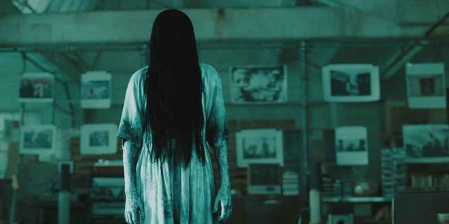
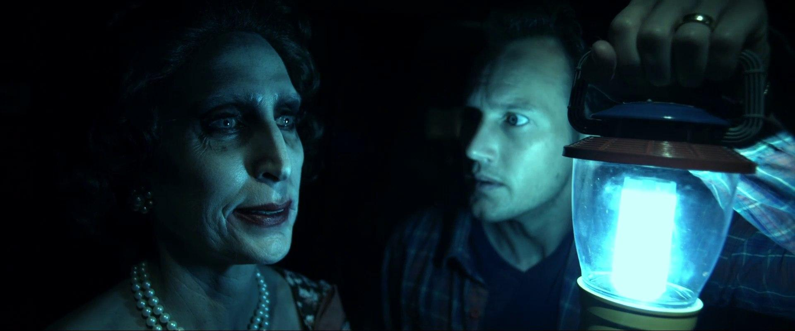
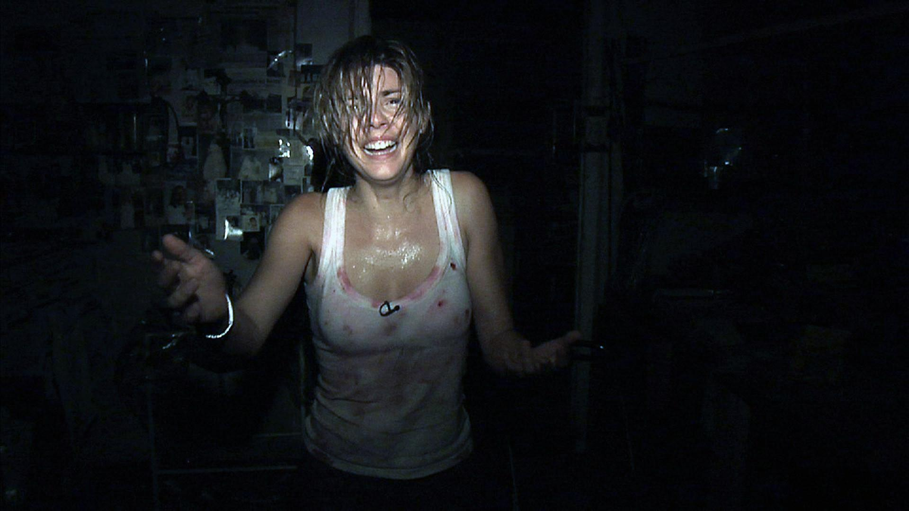
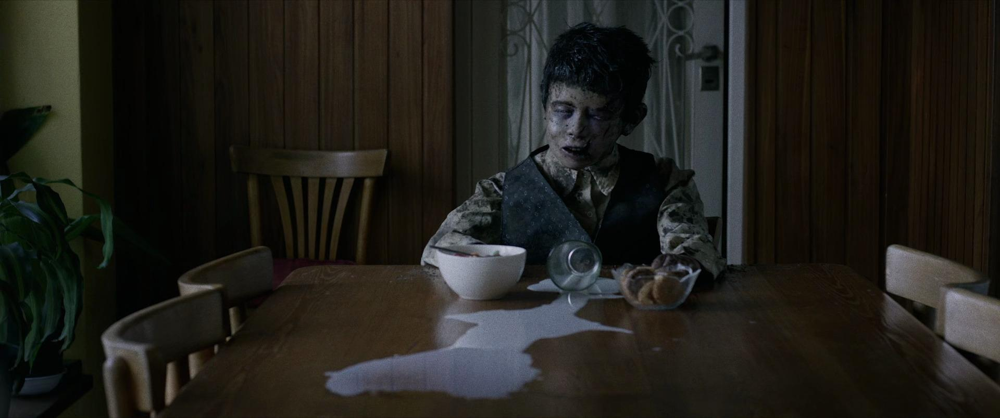
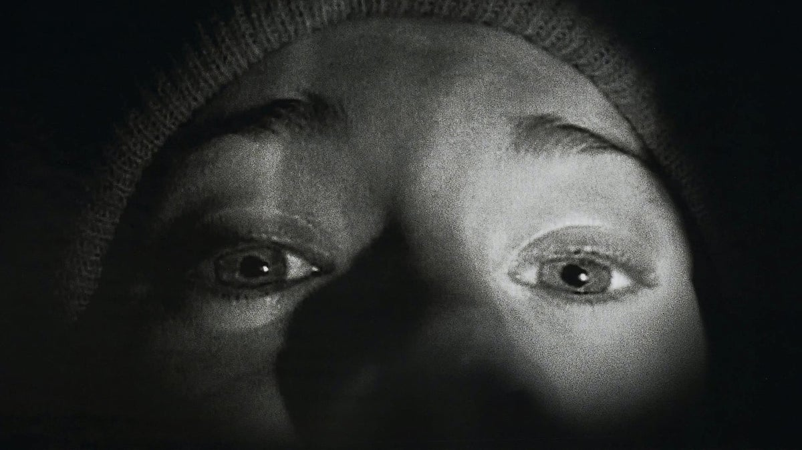
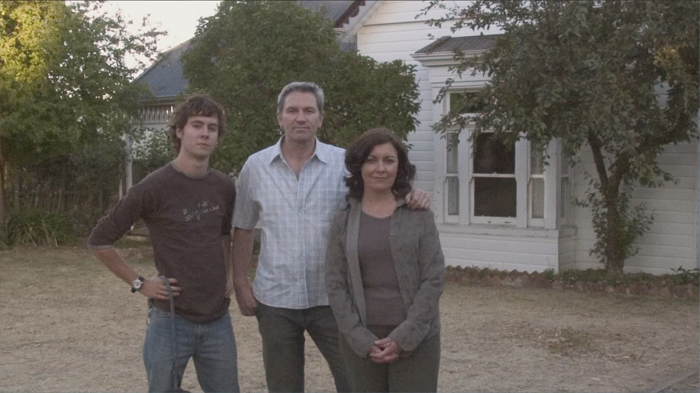
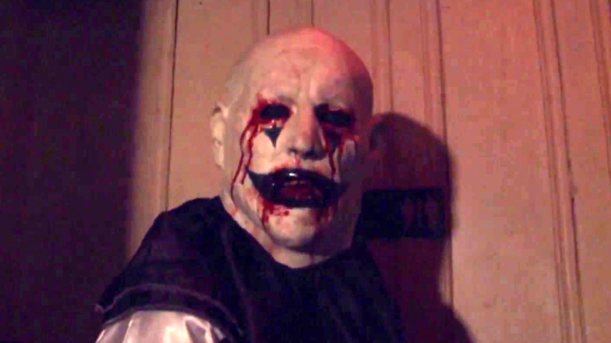
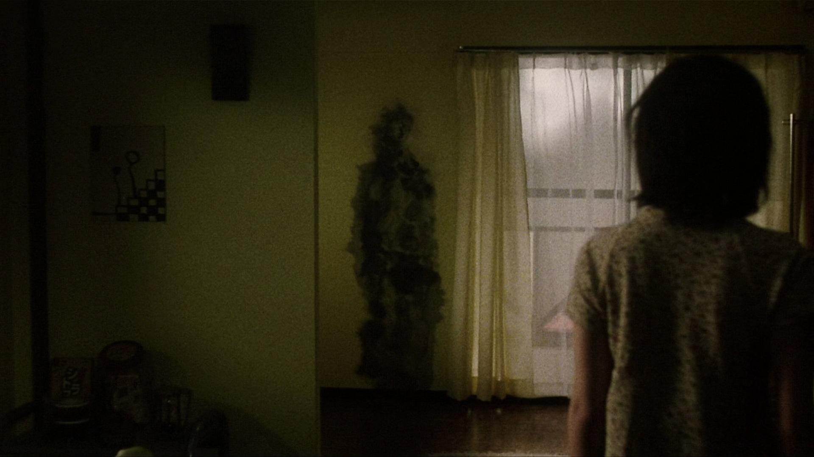
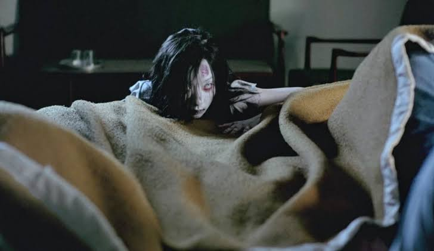
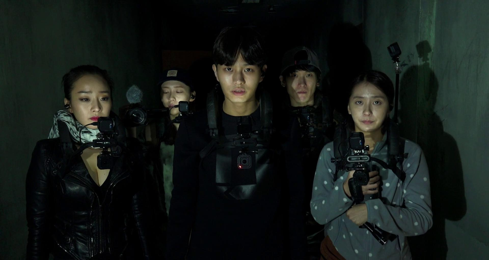

The Crypt · Essential list
The 10 Scariest
Horror Movies I’ve Ever Seen
After more than 1,000 horror movies, these are the ten that have genuinely stayed with Laura — the cursed tapes, night-vision nightmares and haunted places that still linger long after the credits.
Spoiler warning: This article discusses specific frightening moments and reveals.

After watching more than 1,000 horror movies over the past 16 years, I’ve encountered everything from supernatural nightmares and cursed videotapes to haunted asylums and found-footage chaos. But only a handful of films have genuinely stayed with me — lurking in the back of my mind long after the credits rolled.
Of course, horror is completely subjective. Some of my choices might seem obvious, while others may not scare you at all. Many of these films found me early in my horror journey, pre-high school, and the trauma has never quite left me.
These aren’t necessarily ranked from least to most frightening. They’re simply the ten horror movies that frightened me the most — and, in several cases, still make my stomach drop whenever I rewatch them.
01 Insidious (2010)
Directed by James Wan

Watching Insidious now, I can admit that a few moments are slightly cheesy. Even so, it remains one of the most haunting and genuinely creepy films I have ever seen. The story follows a young boy who inexplicably falls into a coma. As his family begins experiencing terrifying supernatural events, they discover that what is happening is far darker than an ordinary haunting.
I first watched Insidious with a friend when I was 12, which was probably the perfect age for it to permanently scar me. It’s an excellent entry-level horror movie for teenagers, but its imagery and sound design are effective enough to frighten seasoned horror fans too.
The opening alone gave me nightmares. The eerie image of the woman in the black veil, paired with those screeching violin chords and the sudden title card, is still one of the creepiest introductions in horror cinema. The scene that affected me most comes near the end, when Renai takes a photograph of her husband, Josh, and realizes the terrifying old woman is standing behind him. That reveal made my stomach turn.
A lot of people point to the red-faced Lipstick-Face Demon appearing behind Josh as the film’s scariest jump scare. It is incredibly effective, but I’ve always found that demon slightly campy. The old woman haunting Josh is far more frightening to me. She gave me nightmares — and, honestly, she still freaks me out.
02 REC (2007)
Directed by Jaume Balagueró and Paco Plaza

REC isn’t only one of the scariest movies I’ve seen; it is also one of the greatest found-footage horror films ever made. The film follows television reporter Ángela Vidal and her cameraman as they accompany a group of firefighters on a routine night call. When they enter an apartment building, the residents and emergency workers are suddenly quarantined inside — and the situation rapidly descends into complete chaos.
You may have seen the American remake, Quarantine, which follows the original almost shot for shot. Personally, I don’t think it comes close. Watch the Spanish original if you can. I discovered REC on SBS in Australia, which used to show late-night international horror films. I watched it at home alone while eating a plate of arancini balls, and by the time I reached the final sequence, I was absolutely terrified.
The penthouse scene remains one of the tensest endings in horror history. Ángela and Pablo enter a filthy apartment filled with cages, newspaper clippings, medical equipment and clues about the origin of the outbreak. When the camera light breaks, they are forced to continue in night vision. That is when we see the Medeiros girl moving through the darkness. Watching Ángela and Pablo desperately try to remain silent while that impossibly thin figure wanders around the room is almost unbearable. I still get sweaty palms whenever I rewatch it.
03 Terrified (2017)
Directed by Demián Rugna

Terrified, also known as Aterrados, is easily among the three scariest films I have ever seen. No matter how many times I watch it, it still hits me with exactly the same force. Set in a Buenos Aires neighborhood plagued by bizarre paranormal activity, the film follows a group of investigators attempting to understand what is happening inside several nearby homes.
There are so many images in this movie that I wish I could erase from my mind. The young boy’s corpse sitting silently at the dining table is one of the darkest and most unsettling scenes I have ever encountered in horror. The camera moves around him so deliberately that you spend the entire sequence waiting for something terrible to happen.
Then there is the woman being violently dragged back and forth across a room, her head repeatedly smashing into the wall. Terrified never allows you to feel safe because you never know where the next threat will come from. It feels less like a traditional horror movie and more like a nightmare you cannot wake up from.
04 The Ring (2002)
Directed by Gore Verbinski
I love the original Japanese film, Ring, but I grew up watching the American remake first — and I genuinely believe it is just as good. The Ring follows journalist Rachel Keller as she investigates a mysterious videotape said to kill anyone who watches it exactly seven days later. It has everything I love in a horror movie: a compelling mystery, rich mythology and a bleak, rain-soaked atmosphere.
Naomi Watts is fantastic, the cold blue-green colour grading is gorgeous, and the cursed tape itself is deeply disturbing. Although the story revolves around VHS technology, the movie remains incredibly haunting more than two decades later. The moment that scarred me is the infamous closet reveal. During a conversation about the first victim’s death, the film suddenly cuts to her disfigured body inside the closet. You are so focused on the dialogue that you are completely unprepared for it. Nightmares forever.
I first watched The Ring when I was 12. Along with The Grudge and REC, it formed my personal holy trinity of childhood fear. My friends and I would even call one another and whisper “seven days” down the phone. Beyond its jump scares, The Ring works because it slowly uncovers a tragic and disturbing story. Every new clue pulls you deeper into its world until the mystery reaches a perfect, horrifying crescendo.
05 The Blair Witch Project (1999)
Directed by Daniel Myrick and Eduardo Sánchez

I know some horror fans find The Blair Witch Project overrated, but it still frightens me. The film follows three student filmmakers who travel into the Maryland woods to investigate a local legend known as the Blair Witch. Made with an extremely small budget and a deceptively simple concept, it is a masterclass in using suggestion, committed performances and atmosphere to create fear.
The idea of being trapped in a forest, walking endlessly without knowing where you are — or whether something supernatural is manipulating you — is deeply unsettling to me. The noises outside the tent, the stick figures hanging from the trees and the final basement scene are now iconic for a reason.
I watched this one when I was 12 too, and at the time I thought it might be real. The film’s groundbreaking marketing deliberately encouraged that belief, presenting the actors as missing people and the footage as something discovered after their disappearance. This movie also ruined camping for me. I was a Girl Guide in high school, but whenever I found myself sleeping in the woods, I thought about The Blair Witch Project.
06 Lake Mungo (2008)
Directed by Joel Anderson

Lake Mungo is an interesting choice for me because I wouldn’t necessarily say I enjoy the entire film. Its low-budget mockumentary presentation can occasionally feel clunky or even slightly cheesy. However, one scene frightens me so much that the film had to make this list.
The story is presented as a documentary about a family trying to understand the mysterious death of their teenage daughter, Alice. As they examine photographs and recordings, they begin discovering unsettling details that suggest her story may not be over. I am always frightened by horror films in which someone appears unexpectedly in the background of a photograph. That idea never gets old — and Lake Mungo uses it extremely well.
The most disturbing moment is recorded on Alice’s phone. She walks through the darkness toward a mysterious figure, only to discover that she is approaching a bloated, dead version of herself. It is a brief, grainy image, but that poor-quality footage somehow makes it even more convincing. The first time I saw it, my heart dropped into my stomach. This is a very slow burn, so give it your full attention: watch it at night and put your phone away. The payoff is worth it.
07 Hell House LLC (2015)
Directed by Stephen Cognetti

I love found-footage horror, and Hell House LLC is one of the genre’s most effective hidden gems. The film investigates a tragedy that occurred during the opening night of a haunted-house attraction inside an abandoned hotel. Through documentary interviews and recovered footage, we watch the attraction’s creators prepare the building — and gradually realize they are not alone.
If you are afraid of clowns, proceed with caution. The clown mannequins are used brilliantly. Small changes in their positions create an unbearable sense that something is moving whenever the camera looks away. The bedroom sequence also made me practically levitate out of my seat. I love horror movies, but I still watch them with a blanket pulled up to my eyes.
There is an interview scene toward the end that feels a little corny to me, but it doesn’t undo everything the film gets right. Hell House LLC deserves its reputation as one of the most frightening found-footage movies of recent years.
08 Pulse / Kairo (2001)
Directed by Kiyoshi Kurosawa

Pulse, originally released as Kairo, is frightening in a completely different way from the other films on this list. Following a series of strange disappearances in Tokyo, the story explores a mysterious connection between the internet and a growing supernatural presence. But this is not a film built around constant jump scares. Its true horror comes from the suffocating loneliness and existential dread hanging over every scene.
The air feels thick while you watch it. The world is grimy, heavy and incredibly sad. Its themes of technology, disconnection and isolation have only become more relevant with time. There is one ghost scene that affected me more than many far louder or gorier moments. The camera remains fixed as a female figure slowly moves across a room. Her movements are unnatural but not exaggerated. Then, without warning, she stumbles. That tiny disruption completely terrified me.
You keep expecting the sequence to explode into a conventional jump scare, but it never does. Its slowness makes it feel like a nightmare — almost Lynchian in the way it turns an ordinary movement into something profoundly wrong. Pulse is the kind of horror movie that settles into your mind and quietly haunts you forever.
09 Shutter (2004)
Directed by Banjong Pisanthanakun and Parkpoom Wongpoom

The original Thai version of Shutter is one of the greatest, and most underappreciated, ghost stories ever made. After a hit-and-run accident, a photographer named Tun and his girlfriend, Jane, begin noticing strange apparitions in their photographs. The premise is simple, but the mystery eventually develops into something far more tragic, disturbing and emotionally devastating.
The images hidden in photographs and the scenes inside the darkroom are already frightening. Then the film delivers one of the most horrifying reveals I have ever seen. Throughout the story, Tun suffers from persistent neck and shoulder pain. Doctors cannot find a cause, and nothing seems to relieve it. Eventually, Jane examines a series of photographs and discovers that the ghost has been sitting on his shoulders the entire time.
Yuck. Absolutely not. The thought of being haunted by something far closer than you realised — and physically carrying it without knowing — is so deeply unsettling. The ghost’s connection to Tun makes the story even more upsetting, although I won’t reveal that part here. Skip the American remake and seek out the Thai original.
10 Gonjiam: Haunted Asylum (2018)
Directed by Jung Bum-shik

Some of my friends think Gonjiam: Haunted Asylum is overrated. When I watched it with my old housemate and his friend in Australia, however, my cortisol levels were through the roof. This South Korean found-footage film follows a group of content creators who livestream an investigation inside an abandoned psychiatric hospital rumoured to be one of the country’s most haunted locations.
Found footage already affects me more than most horror styles, and Asian horror filmmakers are masters at creating dread and deeply unsettling imagery. Put those two things together and, for me, it is chef’s kiss. The characters actually feel like genuine online creators instead of actors playing horror-movie victims. The believable setup is allowed to unfold slowly, making the final descent into chaos hit much harder.
Charlotte’s encounter in the woods had my heart racing. The black-eyed patients are terrifying, and the image of a body floating toward one of the characters is wonderfully horrible. But nothing compares to the rapid-whispering possession scene. Instead of relying on the scream you expect, the character begins making a fast, wet whispering sound that is almost like slurping. Combined with her black eyes and horrifying facial expression, it becomes one of the freakiest possession scenes I have ever watched. I hated it. I also loved it.
Why These Horror Movies Still Scare Me
Some of these choices are mainstream, but they are popular for a reason. They have frightened huge audiences, and many of them reached me at exactly the right — or wrong — moment in my life.
The movies we watch when we are young can leave impressions that never completely disappear. A face in a closet, a figure captured in night vision or a ghost silently sitting on someone’s shoulders can stay with us for decades.
That is what I love about horror. The best scary movies don’t simply make you jump while you are watching them. They follow you home, appear in your thoughts when the lights go out and make ordinary places — a forest, a bedroom, a photograph — feel unsafe.
Now I want to hear from you: What is the scariest movie or television show you have ever seen, and why did it affect you so much?
Watch Laura’s scariest horrors →